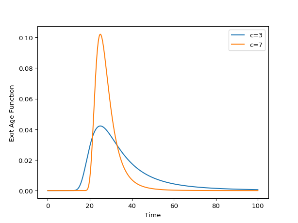

Zusatz¶
-
class
rtdpy.zusatz.Zusatz(b, c, dt, time_end)[source]¶ Bases:
rtdpy.rtd.RTDCreate Zusatz Residence Time Distribution (RTD) model. [1] Parameter a is chosen such that the integral is 1.
\[\begin{split}E(t) = a t^{-c-1} b^{c+1} \text{exp}\left[\left(b^c t^{-c} -1\right)\frac{-c-1}{c}\right] \\a = \frac{1+c}{b\, \text{exp}\left[1+1/c\right]}\end{split}\]Parameters: - b : scalar
b Zusatz parameter
- c : scalar
c Zusatz parameter
- dt : scalar
Time step for RTD.
dt>0- time_end : scalar
End time for RTD.
time_end>0
References
[1] (1, 2) Poulesquen A., et al. (2003) A study of residence time distribution in co-rotating twin-screw extruders. Part II: Experimental validation. “Polymer Engineering and Science”, 43(12), 1849-1862. Examples
>>> import matplotlib.pyplot as plt >>> import rtdpy >>> for c in [3, 7]: >>> a = rtdpy.Zusatz(b=25, c=c, dt=.01, time_end=100) >>> plt.plot(a.time, a.exitage, label=f"c={c}") >>> plt.xlabel('Time') >>> plt.ylabel('Exit Age Function') >>> plt.legend() >>> plt.show()
-
a¶ a parameter that normalizes RTD to 1
-
b¶ b parameter
-
c¶ c parameter
-
dt¶ Time step for RTD
-
exitage¶ Exit age distribution for RTD
-
exitage_norm¶ Normalized Exit Age Distribtion for RTD
-
frequencyresponse(omegas)¶ Parameters: - omegas : ndarray
frequencies at which to evaluate magnitude response
Returns: - magnitude : ndarray
frequency magnitude response at omegas
-
funnelplot(times, disturbances)¶ Return maximum output signal due to square disturbances.
Also returns meshgrid for times and disturbance inputs for ease of plotting.
Parameters: - times : array_like, size m
Times to determine funnelplot
- disturbances : array_like, size n
Disturbance magnitudes
Returns: - x : 2D meshgrid size (mxn)
times
- y : 2D meshgrid size (mxn)
disturbances
- response : 2D meshgrid size (mxn)
maximum response at (x,y)
-
integral()¶ Integral of RTD
-
mrt()¶ Mean residence time of RTD
-
output(inputtime, inputsignal)¶ Convolves input signal with RTD
Parameters: - inputtime : ndarray
Times of input signal, which must have same dt as RTD. Size m
- inputsignal : ndarray
Input signal. Size n
Returns: - outputsignal : ndarrary
Output signal at same dt. Size m + n -1
-
sigma()¶ Variance of RTD
-
stepresponse¶ Step respose of RTD
-
stepresponse_norm¶ Step respose of RTD
-
time¶ Time points for exitage function
-
time_end¶ Last time point for RTD